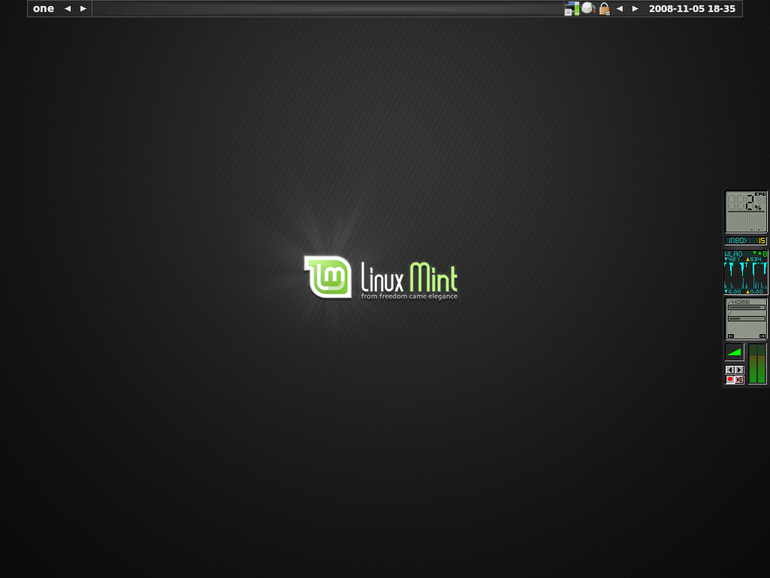
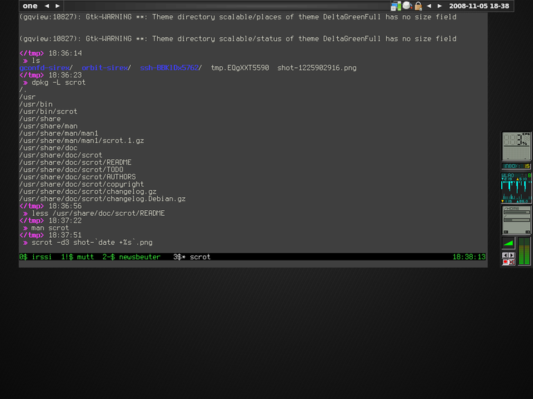
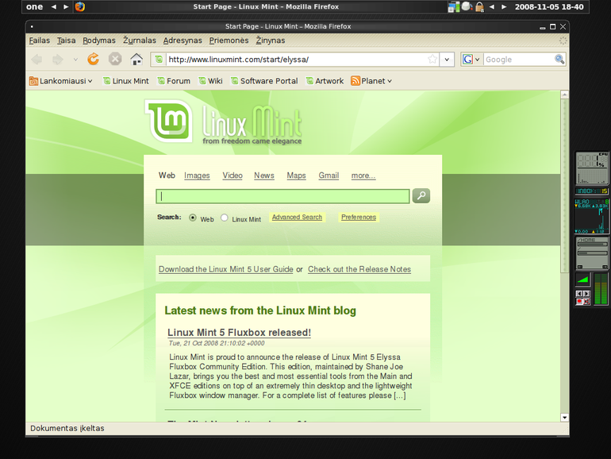
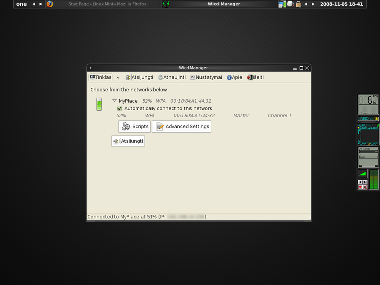

Po Intrepid Ibex išleidimo atsinaujinau į Linux Mint
Belaukiant Intrepid Ibex išleidimo buvau numatęs kelis dalykus kurių laukiau ir norėjau išbandyti: Kubuntu su KDE 4.1, Private katalogas, GNU Tar 1.20. Tačiau po Inrepid išleidimo viskas apsivertė aukštyn kojom, na išskyrus GNU Tar.
Pirmiausia, darbe, naudodamasis atnaujinimo priemone išbandžiau Private Directory, tačiau likau nusivylęs. Aišku neturėjau pakankamai laiko gerai įsigilinti, bet tikėjausi, kad gilintis ir nereikės, nes funkcija tiesiog veiks sklandžiai ir intuityviai. Deja teko įdiegti paketą ecryptfs-utils, o po to, net nesupratau, kaip tuo katalogu naudotis. Bandant jį primontuoti pasirodė kažkoks klaidos pranešimas. Neturėjau laiko gilintis, tai viską taip ir palikau. Aišku, gal būt tai puikus dalykas, bet reikės iki galo išsiaiškinti vėliau.
Kitas didelis nusivylimas yra Kubuntu. Bandydamas Kubuntu patyriau eilę nusivylimų:
Veikia lėtai. Kažkada bandžiau KDE 4.0, jis man taip pat veikė lėtai, bet tikėjausi, kad įdiegus šviežiai tai susitvarkys, bet deja. Lėtai veikia ne pati sistema, bet konkrečiai grafika, langų piešimas, atnaujinimas ir t.t. Po ilgų klaidžiojimų po konfigūraciją išsiaiškinau, kad reikia pakeisti grafikos variklį iš OpenGL į XRenderer. Tai padarius, grafikos greitis panašu, kad susitvarkė.
Nestabilumas. Įvairiose vietose patyriau KDE 4.1 nestabilumą, tai susiję tiek su panelės valdymu, tiek su Plasma ir konfigūracijos įrankiu. Labiausiai nepatiko tai, kad tvarkant grafikos problemas, konfigūracijos įrankis tiesiog perkrauna grafinę aplinką, ko pasekoje dingsta visi neišsaugoti duomenys ir t.t., nebūna jokio įspėjimo. Galiausiai viskas užsibaigė tuo, kad tvarkant grafikos problemas, pasirinkus OpenGL fallback įvyko eilinis grafinės aplinkos perkrovimas ir po to KDE nebeužsikrovė visiškai.
KDE Control Center. Dar viena nelaimė – KDE Control Center. Jau buvau pamiršęs kaip nerviškai veikia klaidžiojimas po įvairiausius konfigūracijos langus. Kiekvieną kartą norint išbandyti kitą nustatymą, tenka keliauti per visokius meniu į tą pačią vietą, kurią ne visada randi iš pirmo karto. Visų nustatymų aprašymai apgailėtini, o tiksliau nieko nesako. Vos pradėjus naudotis KDE Control Center spėjau pasiilgti tekstinių konfigūracijų failų, kuriuose kiekvienas parametras kuo puikiausiai dokumentuotas, pateikti naudojimo pavyzdžiai ir t.t. Be to, kiekvieną kartą norint ką nors surasti galima puikiausiai išnaudoti visas teksto paieškos galimybes, kurios tik yra.
Paskutinis užkliuvęs dalykas, kuris galutinai pastumėjo trinti Kubuntu yra tas, kad KDE daugelis sisteminių programų nežinia kaip surištos viena su kita ir įvykus tokiai nelaimei, kai nebeužsikrauna grafinė aplinka, ką nors pakeisti iš komandinės eilutės labai sunku. Bent jau man nepavyko surasti, kaip atstatyti tą OpenGL fallback parametrą į vietą. Paleidus praktiškai bet kurią programą Fail-Safe režimu, prasidedančią raide k, pasirodo klaidų pranešimai apie tai, kad nepaleistas koks tai KDE initializatorius ir panašūs dalykai.
Tai tokia mano pažintis su Kubuntu ir KDE 4.1. Suprantu, kad KDE 4.1, kol kas yra dar labai jaunas, todėl jam reikia laiko, o be to gavau pastabų, kad daug problemų yra susijusių su tuo, kad Debian iki šiol dar nėra suintegravusi KDE 4.1, ko pasekoje Ubuntu taip pat matyt to pasekmės. Kitas dalykas yra tas, kad Ubuntu daugiausiai dėmesio skiria būtent Ubuntu distribucijai, o ne Kubuntu.
Užteks apie nenusisekusius dalykus, pereisiu prie gerųjų. Tai gi, taip bežaidžiant su Kubuntu, galiausiai supratau, kad tam dar ne laikas. Kadangi Intrepid versija neturi labai daug naujovių, tai nusprendžiau išbandyti ką nors naujo. Kadangi betvarkant neužsikraunantį KDE teko įsidiegti Fluxbox’ą, kad turėti nors kažkokį langų valdytoją, nusprendžiau išbandyti kokią nors Fluxbox distribuciją. Fluxbox’ą esu ankčiau naudojęs gal pusę metų, o ir šį kartą jis įsidiegė ir pasileido gal per minutę ir veikė kaip visada be priekaištų. Mano kolegos komentaras: tobula yra ne tai, prie ko gali kažką pridėti, o tai iš ko negali nieko atimti“. Fluxbox būtent toks ir yra :)
Nusprendus įsidiegti distribuciją, naudojančią Fluxbox aplinką radau šiuos variantus:
fluxbuntu – pasiskaitinėjus supratau, kad šis projektas praktiškai miręs, paskutinė versija pastatyta ant Ubuntu 7.10, o tai buvo prieš metus.
Damn Small Linux, gal ir visai nieko, bet kiek per mažas ir neturi Ubuntu backgroundo.
Linux Mint Fluxbox – puiki, aktyvi Ubuntu pagrindu sukurta distribucija.
Daugelis kitų žiūrėti distribucijo nesudomino vien dėt to, kad neturi apt-get paketų valdymo sistemos.
Ilgai nesvarsčiu pasirinkau Linux Mint Fluxbox. Nors jis ir pastatytas ant Ubuntu Hardy, tačiau peršokti į vienu žingsniu naujesnę versiją visai nesunku. Parsisiuntus ir įdiegus išvydau pasakišką vaizdą:
{kind=link}
Fluxbox veikia tiesiog žaibiškai greitai, užsikrauna akimirksniu. Minimalistinis stilius slepia dideles galimybes. Kartu su Linux Mint, Fluxbox ateina paruoštas pilnaverčiui darbui, belaidis internetas veikia puikiai, taip pat įdėta ir garso valdymo piktograma, kurios pasigesdavau anksčiau.
Žodžiu, viskas tiesiog veikia, jokių bereikalingų efektų ir nesibaigiančių konfigūracijų langų. Paprasta ir patogu naudoti.
Štai daugiau vaizdų:
   {kind=link}
{kind=link}
{kind=link}
{kind=link}